Identidade visual para uma iniciativa social que transforma realidades por meio de educação, esporte, inclusão, empreendedorismo feminino e tecnologia. Diferenças que viram unidade.Visual identity for a social initiative that changes lives through education, sports, inclusion, female entrepreneurship and technology. Differences that become unity.
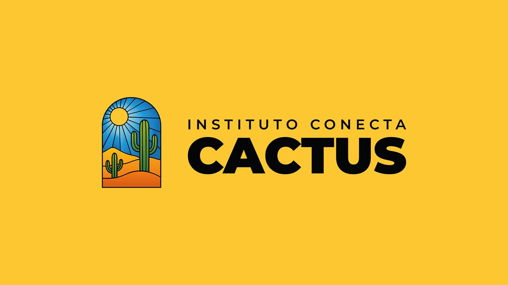
CONCEITO & ORIGENSCONCEPT & ORIGINS
O projeto nasceu da necessidade de traduzir visualmente a essência do instituto: resiliência, pluralidade e impacto social. Mais do que uma identidade funcional, o objetivo era construir uma linguagem visual para muitas vozes.The project came from the need to visually translate the institute's essence: resilience, plurality and social impact. More than a functional identity, the goal was to build a visual language for many voices.
Concebido em Minas Gerais e por mineiros, o projeto carrega referências da cultura local — fachadas, janelas e uma sensação de calor e pertencimento. Em diálogo com essa base, incorporei elementos do artesanato nordestino, região onde nasci e cresci. Vitrais, cores, formas e texturas artesanais se juntam numa identidade que reflete a diversidade cultural do Brasil.Conceived in Minas Gerais, by people from Minas Gerais, the project carries references to local culture — façades, windows and a sense of warmth and belonging. In dialogue with that foundation, I brought in elements of Northeastern Brazilian craftsmanship, the region where I was born and raised. Stained glass, colors, shapes and handmade textures come together in an identity that reflects Brazil's cultural diversity.
Vitrais, janelas coloniais, cerâmica e a arte modernista brasileira formaram o repertório visual da marca.Stained glass, colonial windows, ceramics and Brazilian modernist art shaped the brand's visual repertoire.
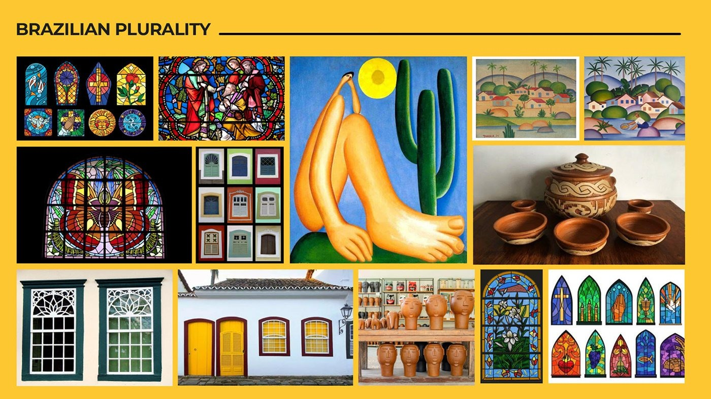
O SISTEMATHE SYSTEM
O símbolo parte do arco de uma janela — abertura e perspectiva. Dentro dele, o cacto e o sol falam de resiliência e esperança. As divisões coloridas, inspiradas no vitral, mostram como partes diferentes formam um todo harmônico.The symbol starts from the arch of a window — openness and perspective. Inside it, the cactus and the sun speak of resilience and hope. The colored divisions, inspired by stained glass, show how different parts form a harmonious whole.
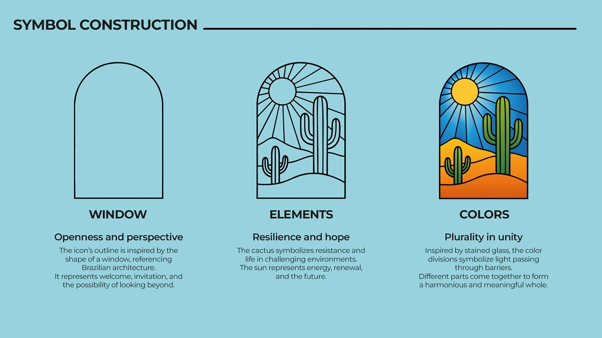
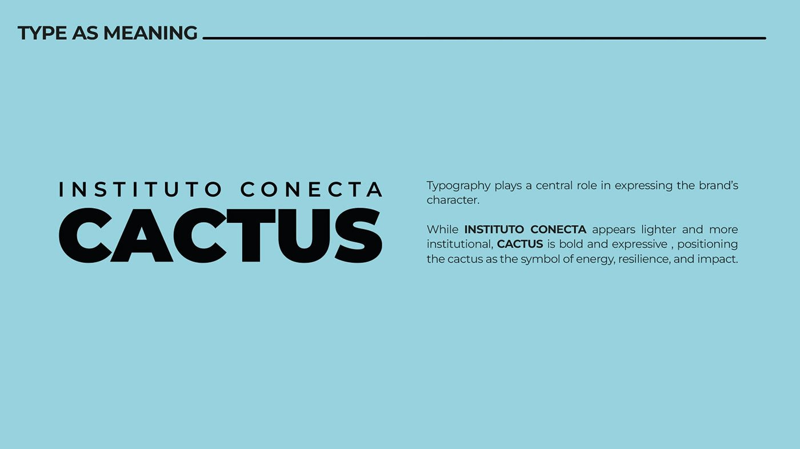
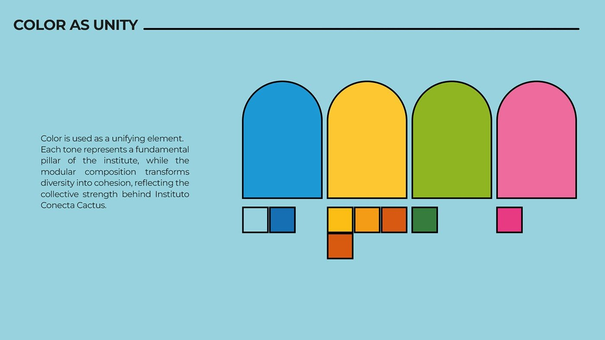
Fachada, sinalização, campanhas e materiais. Os personagens ilustrados dão rosto às pessoas que o instituto acolhe.Façade, signage, campaigns and materials. The illustrated characters give a face to the people the institute supports.
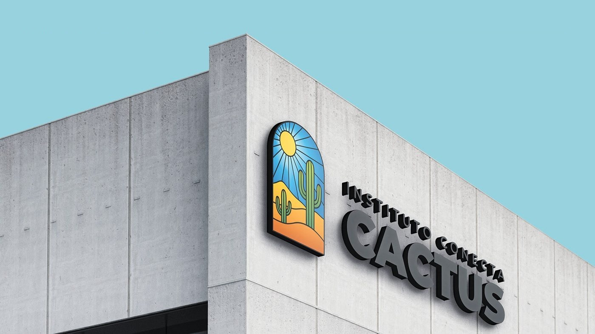
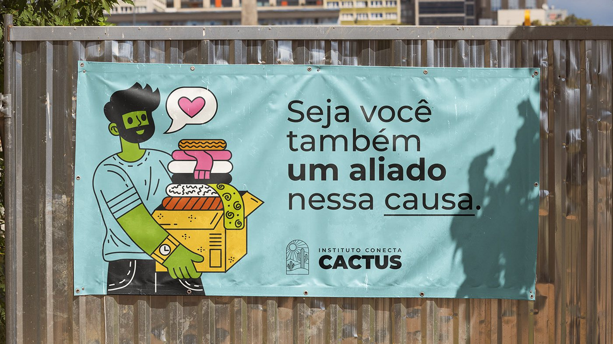
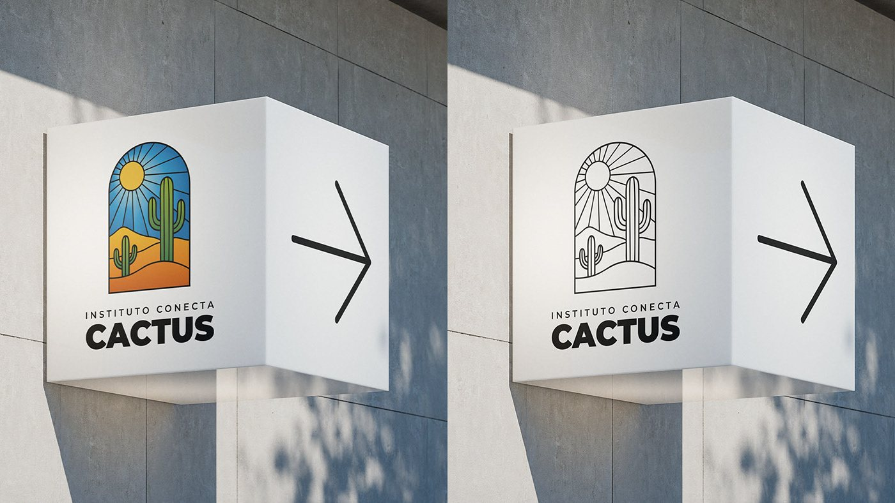
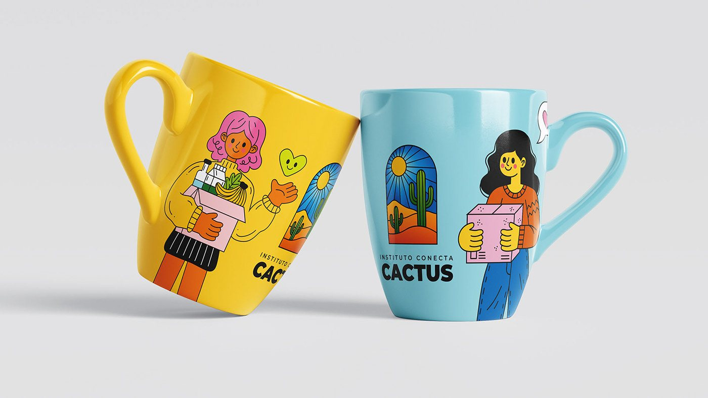
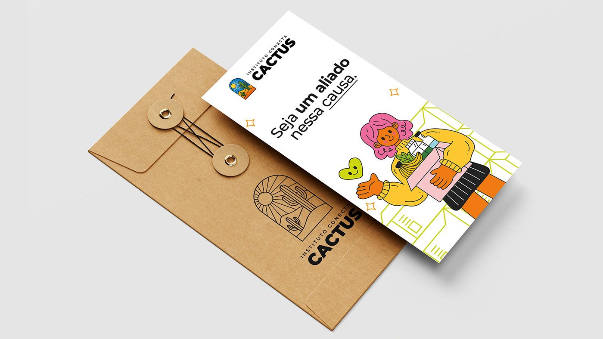
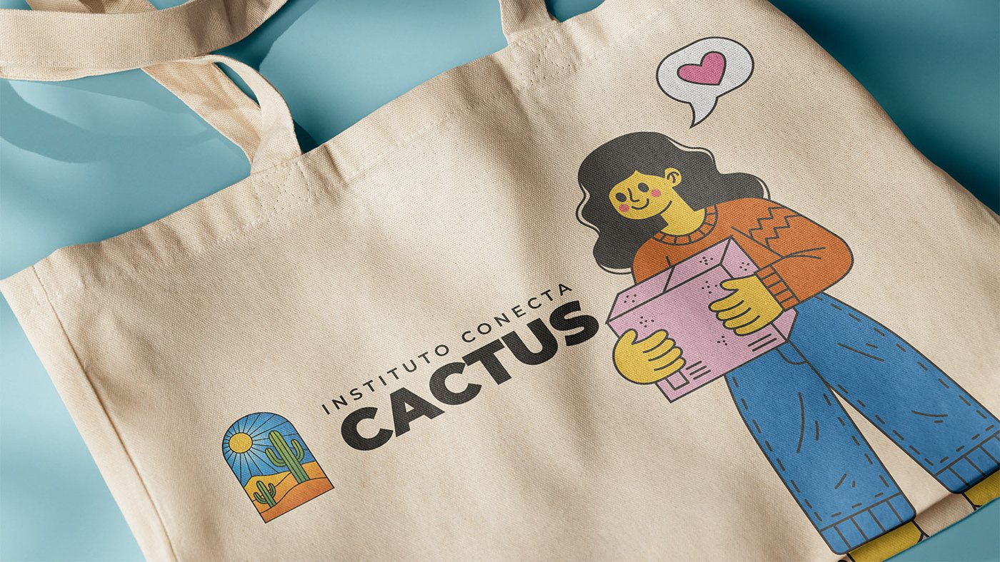
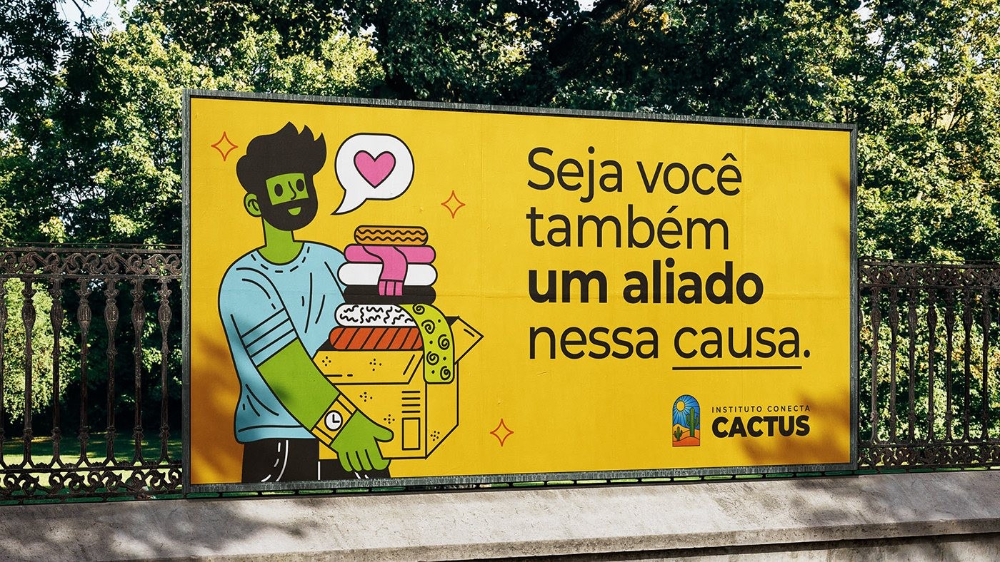